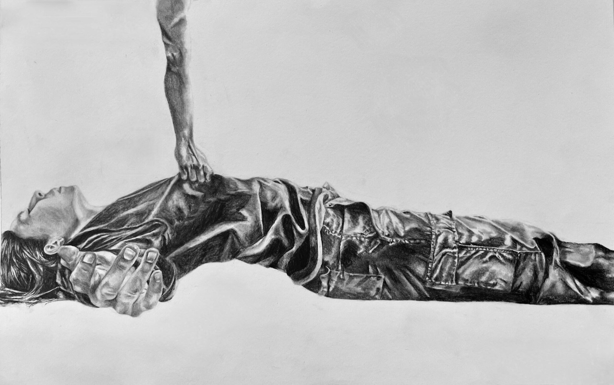
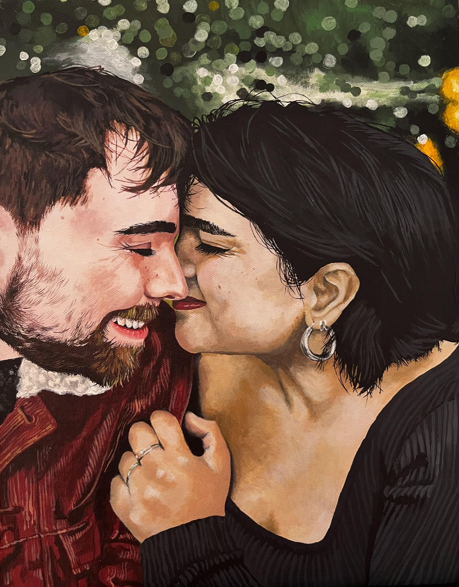
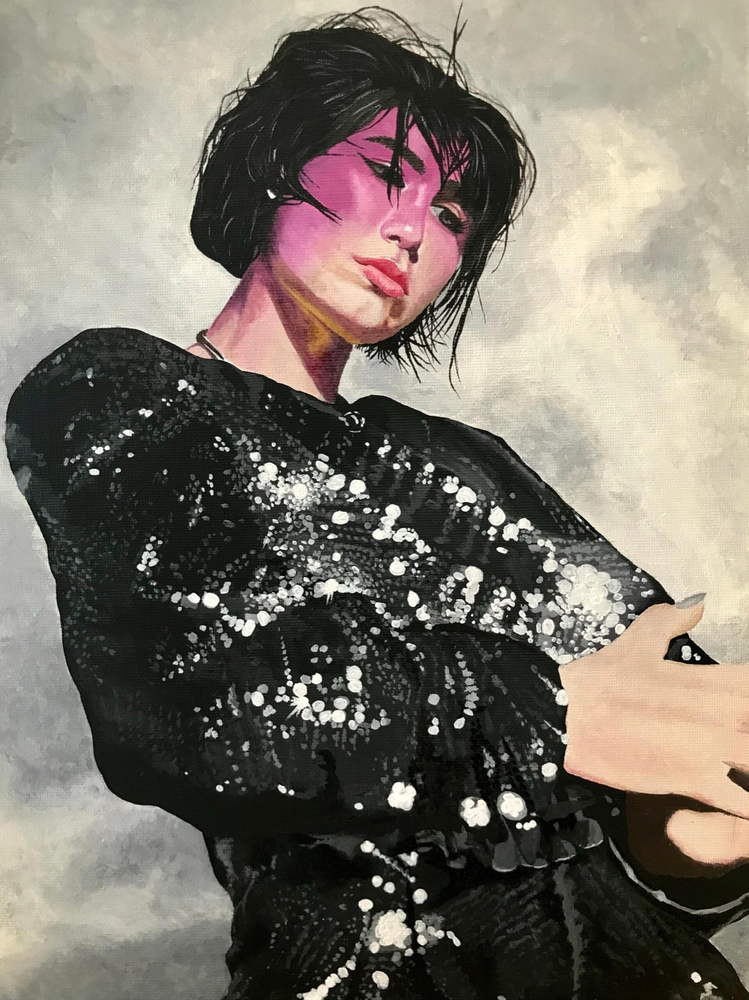
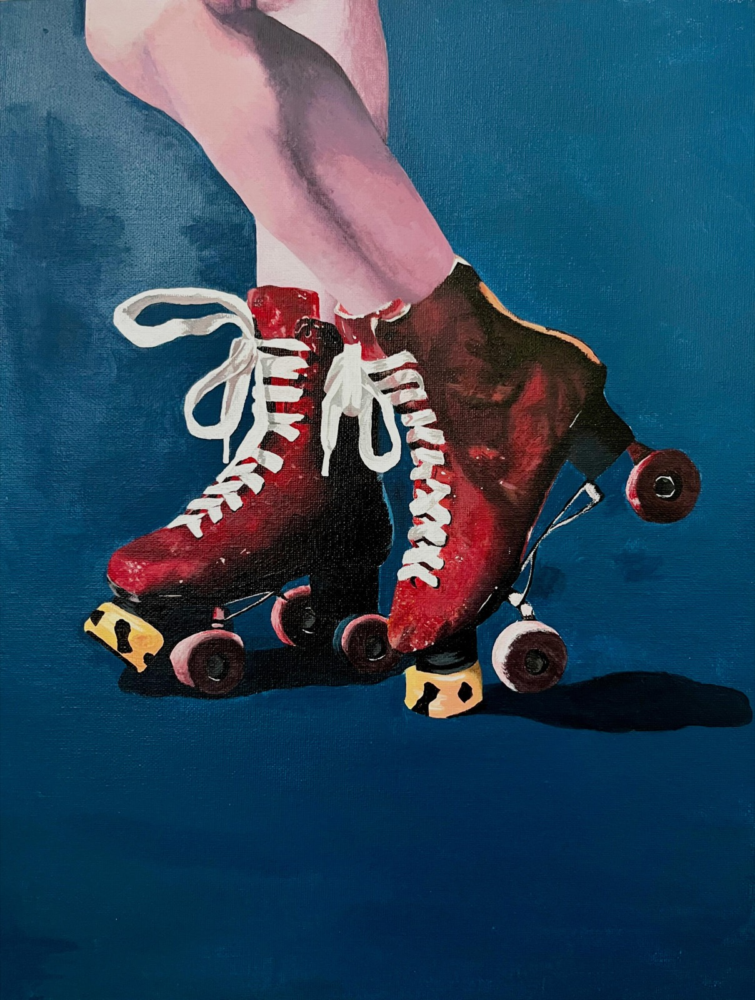
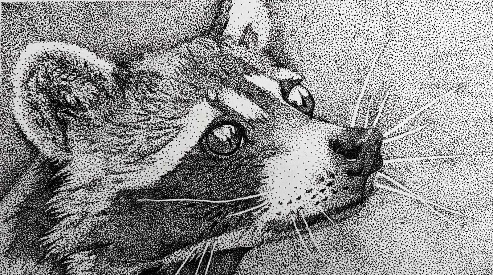
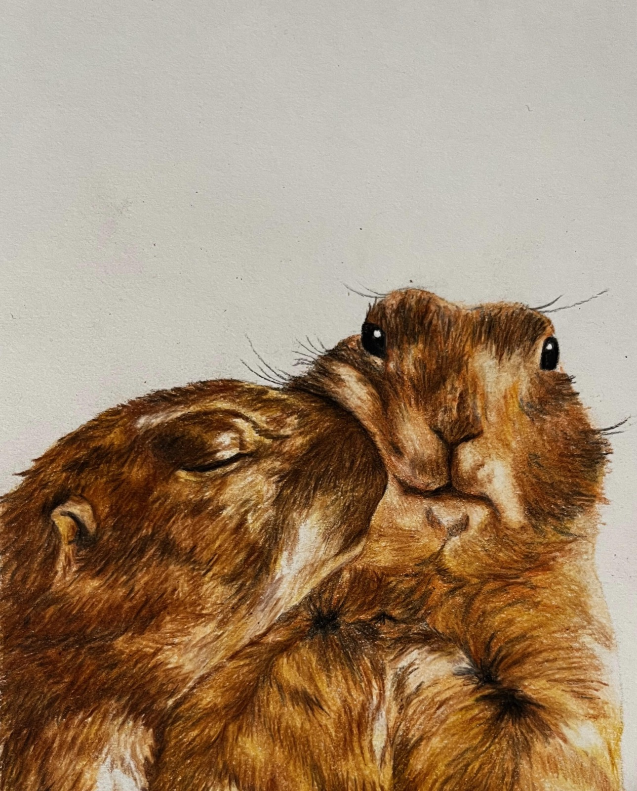
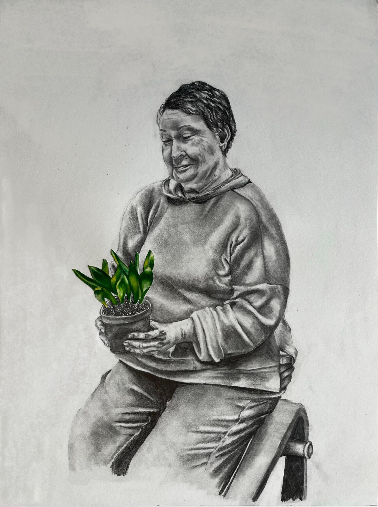
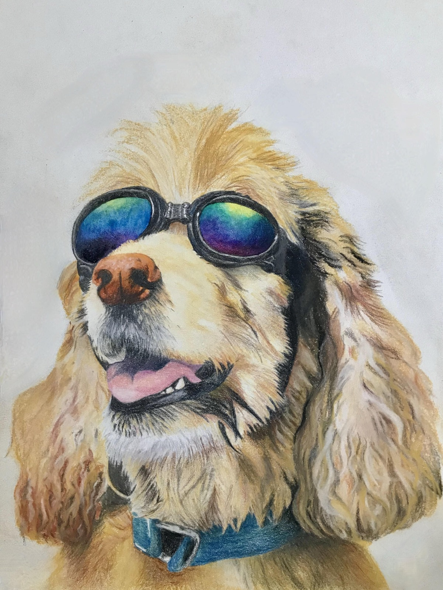
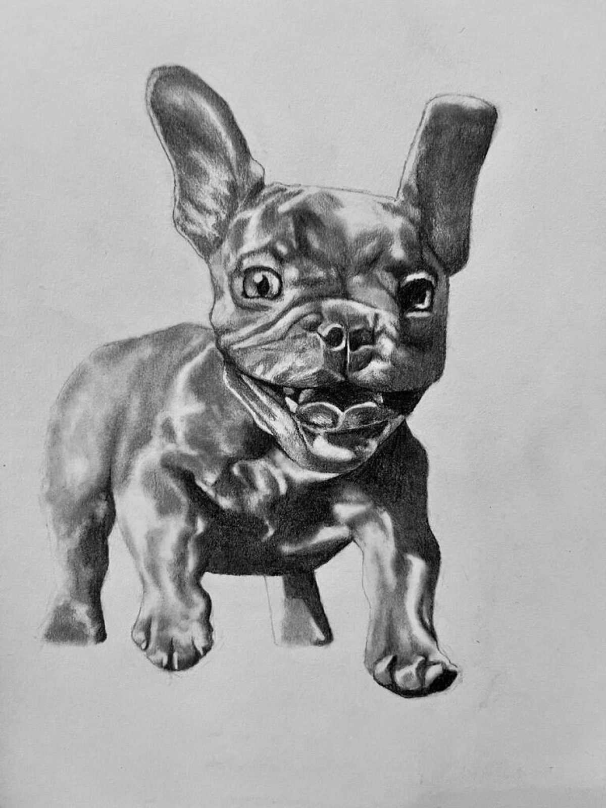

Gallery
This gallery showcases all the traits I align with as an artist. Years of artwork, countless hours of patience, heart, and hair-thin artistic precision poured into work that best expresses how I see the world.
Art has always been a hobby of mine; however, I’m always open to commissions. If you’re interested in ordering a piece, feel free to contact me.

Self Portrait: Take Me Away
Examines the feelings of despair that come with extreme isolation. Drawn in the aftermath of the Covid-19 pandemic, the piece attempts to replicate the helplessness I felt while recovering from the psychological effects from months of being in quarantine. I'm depicted surrendering to forces beyond my control, as though being physically carried away by influences I am powerless to resist.

Newlyweds
Captures the quiet intensity of love between two people newly joined in marriage. Their embrace is soft, the wife’s ring glinting as a delicate symbol of devotion. Every brushstroke is intentional, capturing the significance of their bond, compassion, unconditional support, and tenderness. This painting took three months to complete, and is my most detailed piece ever.

Mother and Yuca

BENEE

Different State of Mind

Racoon

Groundhogs

For the Next Generation
Explores the powerful bonds between generations, illuminated by the guidance of elders.

Untitled

Sparky